4 — Authorisation is a vibe
Every endpoint in your app checks permissions. No two of them check permissions the same way. And on the table that actually matters, Row Level Security was never turned on.
I know this one from the inside, not from a write-up. I'd vibe-coded a concept app on Lovable to demo to a handful of potential clients — each with their own seeded dummy data, so every demo would look tailored to them. Then one client's login pulled up a dummy itinerary that belonged to somebody else's dummy airline. Nothing real was at risk, because the data on both sides was fake. But the query that surfaced it was completely real, and so was the missing predicate behind it.
Authorisation generated one handler at a time means forty endpoints
with forty separate interpretations of who's allowed to do what, and
no policy anyone could actually read end to end. "Who can see this?"
becomes a question you can only answer by grepping the codebase. The
multi-tenant version is worse: one missing WHERE org_id = ?
isn't a bug, it's a data disclosure — usually invisible in the demo,
because the founder is the only row in the table. I got lucky: mine
had two.

One of these can be shown to an auditor. The other can only be read, handler by handler.
Supabase and Postgres make this sharper than most stacks, because
Row Level Security is opt-in: the anon key is public by
design, and RLS is the only thing standing between that key and the
whole database. Vibe-coded apps ship with it off, or with a
placeholder USING (true) policy, because that's what
makes the demo work on the first try. The flagship story here is
CVE-2025-48757 — what researchers started calling "the Lovable
curse." Matt Palmer and Kody Low found it in March 2025 via a
Lovable-built app; a scan of 1,645 public Lovable apps turned up 303
vulnerable endpoints across 170 projects, a 10.3% hit rate, CVSS 9.3,
unauthenticated read and write access to emails, addresses, payment
details, and API keys. The telling detail is the remediation:
Lovable's fix was a scanner that checked whether a policy
existed on a table, not whether the policy was correct — a checklist
bolted on where a policy layer should have been.
One missing predicate, and the query can't tell your organisation from anyone else's.
This is worth taking seriously even without the AI angle: OWASP has
ranked Broken Access Control the #1 web risk since 2021, found in
94% of tested applications, with more occurrences than any other
category by a wide margin. Vibe coding doesn't invent this risk —
it ships it faster and hides it better, because nobody had to
consciously decide to skip the check; it was simply never generated.
There's a compliance angle too, worth naming from the regtech side:
a SOC 2 auditor asks for the access-control policy and
evidence it's enforced. A policy engine or a coherent set of RLS
rules is something you can hand over, diff, and test. Forty inline
if statements scattered across handlers is an
archaeology project, not an artifact.
The fix is one policy layer, deny by default, tested independently of any feature. Handlers ask the policy what's allowed — they never decide it themselves.
If you've shipped fast with AI tools and want a second pair of eyes before it goes further, that's exactly what a vibe code audit is for.